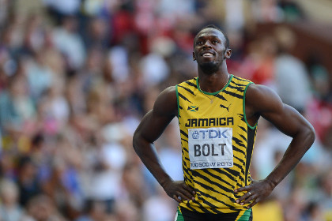
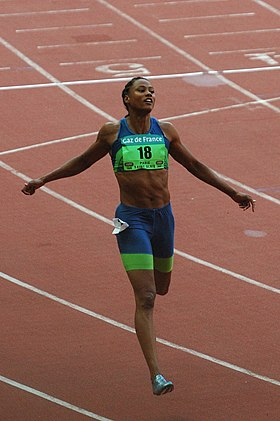
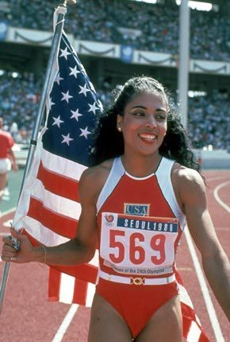
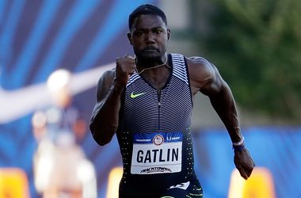
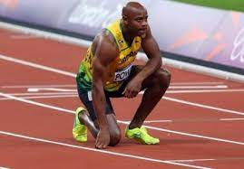
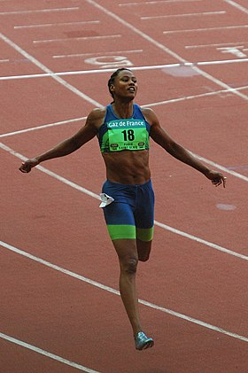
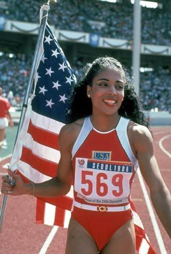
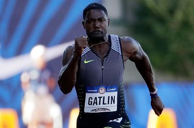
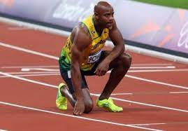

 







1. Усэйн Болт
- Страна: Ямайка
- Лучшее официальное время: 9,58
- Когда и где показан результат: Берлин, 2009
2. Флоренс Гриффит-Джойнер
- Страна: США
- Лучшее официальное время: 10,49
- Когда и где показан результат: Индианаполис, 1988
3. Асафа Пауэлл
- Страна: Ямайка
- Лучшее официальное время: 9,72
- Когда и где показан результат: Лозанна, 2008
4. Шэлли-Энн Фрейзер-Прайс
- Страна: Ямайка
- Лучшее официальное время: 10,60
- Когда и где показан результат: Лозанна, 26 августа 2021
5. Джастин Гэтлин
- Страна: США
- Лучшее официальное время: 9,74
- Когда и где показан результат: Доха, 2015
6. Мэрион Джонс
- Страна: США
- Лучшее официальное время: 10,65
- Когда и где показан результат: Йоханнесбург, 1998